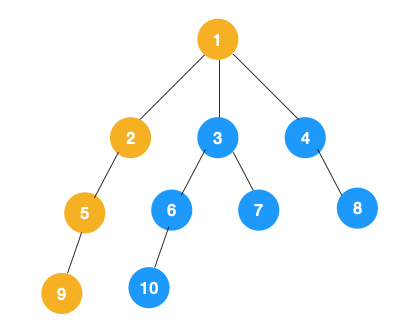
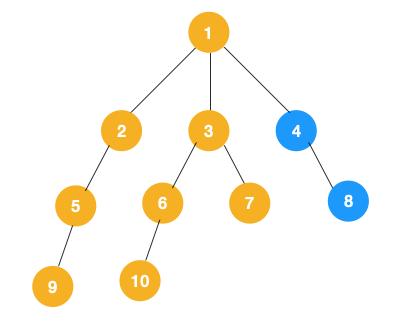
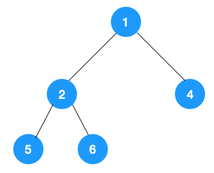

深度优先遍历(Depth First Search, 简称 DFS) 与广度优先遍历(Breath First Search)是图论中两种非常重要的算法，生产上广泛用于拓扑排序，寻路(走迷宫)，搜索引擎，爬虫等，也频繁出现在 leetcode，高频面试题中。
深度优先遍历
主要思路是从图中一个未访问的顶点 V 开始，沿着一条路一直走到底，然后从这条路尽头的节点回退到上一个节点，再从另一条路开始走到底…，不断递归重复此过程，直到所有的顶点都遍历完成，它的特点是不撞南墙不回头，先走完一条路，再换一条路继续走。
树是图的一种特例(连通无环的图就是树)，接下来我们来看看树用深度优先遍历该怎么遍历。

我们从根节点 1 开始遍历，它相邻的节点有 2，3，4，先遍历节点 2，再遍历 2 的子节点 5，然后再遍历 5 的子节点 9。

上图中一条路已经走到底了(9是叶子节点，再无可遍历的节点)，此时就从 9 回退到上一个节点 5，看下节点 5 是否还有除 9 以外的节点，没有继续回退到 2，2 也没有除 5 以外的节点，回退到 1，1 有除 2 以外的节点 3，所以从节点 3 开始进行深度优先遍历，如下：
同理从 10 开始往上回溯到 6, 6 没有除 10 以外的子节点，再往上回溯，发现 3 有除 6 以外的子点 7，所以此时会遍历 7。同理从 10 开始往上回溯到 6, 6 没有除 10 以外的子节点，再往上回溯，发现 3 有除 6 以外的子点 7，所以此时会遍历 7。

从 7 往上回溯到 3， 1，发现 1 还有节点 4 未遍历，所以此时沿着 4， 8 进行遍历,这样就遍历完成了。
完整的节点的遍历顺序如下(节点上的的蓝色数字代表)：

相信大家看到以上的遍历不难发现这就是树的前序遍历,实际上不管是前序遍历，还是中序遍历，亦或是后序遍历，都属于深度优先遍历。
广度优先遍历
广度优先遍历，指的是从图的一个未遍历的节点出发，先遍历这个节点的相邻节点，再依次遍历每个相邻节点的相邻节点。
上文所述树的广度优先遍历动图如下，每个节点的值即为它们的遍历顺序。所以广度优先遍历也叫层序遍历，先遍历第一层(节点 1)，再遍历第二层(节点 2，3，4)，第三层(5，6，7，8)，第四层(9，10)。

深度优先遍历用的是栈，而广度优先遍历要用队列来实现，我们以下图二叉树为例来看看如何用队列来实现广度优先遍历。

动图如下：

算法实现
python实现深度优先
递归实现。
1 | def depth_tree(tree_node): |
python实现广度优先
队列实现。
1 | def level_queue(root): |